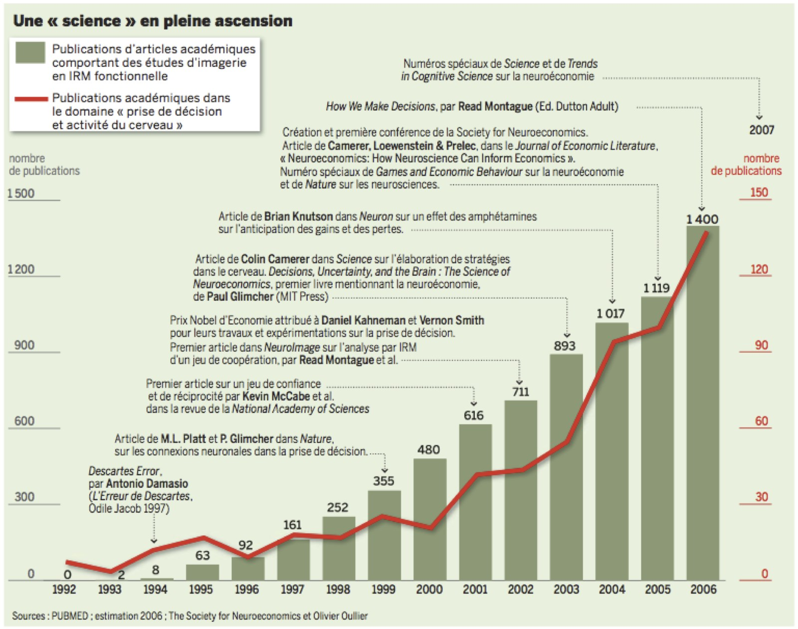

Dans la mesure où les définitions diffèrent, il est intéressant de remonter à la naissance de la neuroéconomie, pour mieux saisir les enjeux qu’elle pose aujourd’hui et qui font qu’il n y a pas de consensus autour d’une même définition des travaux de recherche s’inscrivant sous ce label.
Au tout début des années 1990, les universitaires américains furent les premiers à faire de la neuroéconomie. Paul Glimcher, professeur à la New York University (NYU) et l'un des pères fondateurs de la discipline, avait trouvé son bonheur dans une étude du neurologiste William Newsome sur les difficiles modes de décision... des singes. Un autre neurologiste, Antonio Damasio, de l'université d'Iowa, étudiait la décision chez les victimes de lésions cérébrales. A l'époque, les scientifiques parlaient tout juste de "psychophysique".
Ce n'est qu'en 1998 que la neuroéconomie fait son apparition sous la plume de Kevin McCabe, professeur à la George Mason University. Celui-ci invente le mot neuroéconomie pour convaincre l'agence gouvernementale de la recherche, National Science Foundation, de lui accorder une subvention. Très peu de temps après, en 1999, Paul Glimcher et Michael Pratt publient dans la revue Nature leur étude sur le comportement des singes lié aux récompenses espérées. Pour Paul Zak, directeur du Center for Neuroeconomics Studies à la Claremont Graduate University (Californie), c'est le premier vrai article de neuroéconomie, car il mène l'enquête sur une allocation optimale de ressources rares. Peu importe que la vedette de l'étude soit un singe et non pas Homo economicus !
Les pionniers des années 1990 privilégient le travail interdisciplinaire : ils sont médecins, psychologues, biologistes, économistes... Du côté des neurosciences, "on ouvre la boîte noire qui génère les comportements, mais on n'a guère de comportements intéressants à étudier : j'étais frustré", explique Paul Zak, à l'époque jeune biologiste, pour expliquer son intérêt pour l'économie qui, de son côté, "teste des tas de modèles de comportements sans savoir ce qui produit ces comportements", affirme-t-il.
La rencontre entre les deux disciplines, qu'il juge "inéluctable", se réalise au cours de réunions clés. Il y eut à l'origine une entrevue en 1997 à la Carnegie Mellon University ; puis deux rencontres en 2001, l'une à la Fondation Gruter, l'autre à l'université Princeton. Deux ans plus tard, 30 chercheurs convaincus se retrouvent à Martha's Vineyard, lieu de villégiature de la jet-set américaine au large de Cape Cod, sur la côte du Massachusetts. Et, en 2004, ils sont 83 sur l'île de Kiawah, une station balnéaire de Caroline du Sud. Vernon Smith, Prix Nobel d'économie, apporte sa caution à la réunion. Et les neuroconspirateurs, de plus en plus nombreux, décident alors de créer la Society for Neuroeconomics.
L'association, installée à New York, tout près de la NYU, revendique plus de 400 membres aux Etats-Unis et dans le monde. Ses chercheurs ont créé de solides laboratoires sur l'ensemble du territoire américain. Le champ d'études n'a pas de limites. L'outil de l'imagerie par résonance magnétique (IRM) doit aider M. Zak à comprendre "pourquoi les gens sont bons ou mauvais". Il l'applique aux hommes, aux singes et autres animaux. Stacy Wood, directrice du Center for Neuroeconomic Research à l'université de Caroline du Sud, s'intéresse quant à elle aux décisions des consommateurs. Elle fouille le cerveau de personnes qui ont une alimentation de bon goût, mais mauvaise pour la santé...
 Le nombre de publications sur la neuroéconomie dans le monde. Ce nombre en perpétuelle évolution montre bien l'attrait grandissant dans cette nouvelle discipline jusqu'à l'année 2006 (source Le Monde)
D'autres s'intéressent aux investisseurs en Bourse. Ces études diverses et variées coûtent cher. Le Center for Neuroeconomics Studies de l'université Claremont emploie 14 chercheurs et affiche un budget de fonctionnement annuel de 800 000 dollars. Les agences de l'Etat - les National Institutes of Health -, souvent appelées à la rescousse, soutiennent volontiers cette science émergente. Elles viennent ainsi d'annoncer une subvention de 1,5 million de dollars pour étudier les mécanismes neurobiologiques du comportement économique des adultes vieillissants.
Les fondations International Foundation for Research in Experimental Economics (Ifree), MacArthur, Templeton, Mercatus, Gruter Institute sont sollicitées. La fondation MacArthur, dont l'objectif est "d'améliorer la condition humaine", a promis une aide sur trois ans de 10 millions de dollars aux neuroéconomistes qui planchent sur le droit. "D'ici dix ans, la neuroéconomie sera une matière classique au même titre que la macroéconomie", prédit M. Zak.
Le nombre de publications sur la neuroéconomie dans le monde jusqu'à maintenant. On remarque une nette diminution l'année 2009, après le pic de l'année 2008 suite à la crise financière. Ce graphique que nous avons réalisé à l'aide de la base de données Factiva est en accord avec la courbe du journal Le Monde ci-dessus, et montre qu'à l'engouement qui a eu lieu jusqu'à l'année 2008, a succédé un début de désintérêt. (source Factiva)
On remarque donc via cette première approche traitant de l’existence même de la neuroéconomie, que ce nouveau champ de recherche est sujet à plusieurs questions dont certaines sont assez controversées ce qui donne lieu à diverses définitions influencées toutes par la position qu’on prend à l’égard de cette discipline.
A travers les différentes rubriques de notre site, on essayera donc de détailler ces différentes controverses que suscite la neuroéconomie, et qui vont donc de son existence même en tant que champs disciplinaire indépendant, en passant par l’apport qui peut être le sien pour arriver à des questions plus générales d’ordre étiques (concernant le protocole expérimental utilisé) ou encore anthropologique (le réductionnisme biologique).